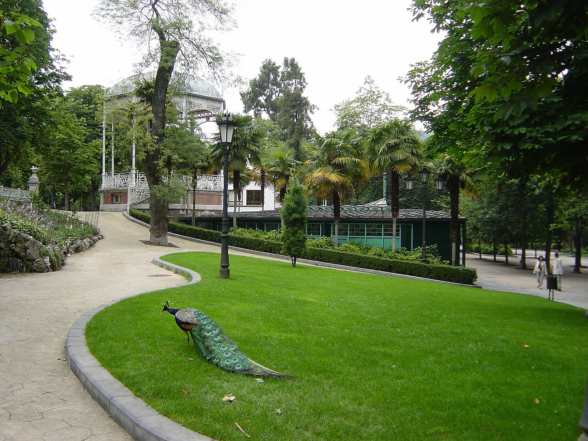

Parque de San Francisco

El Parque de San Francisco, corazón verde de Oviedo, invita a pasear entre jardines centenarios, fuentes ornamentales y esculturas que mezclan historia y arte al aire libre. Sus amplias alamedas y rincones sombreados ofrecen un remanso de tranquilidad junto a edificios emblemáticos del casco antiguo, ideal para descubrir la esencia de la ciudad a paso tranquilo.
Perfecto para familias, parejas y amantes de la fotografía, el parque acoge eventos culturales y mercados temporales que animan la vida urbana sin perder su atmósfera serena. Ven y disfruta de un espacio donde la naturaleza y la tradición asturiana se encuentran en pleno centro de Oviedo.
Parque de invierno

El Parque de Invierno de Oviedo es un amplio pulmón verde a orillas del río Nora que combina senderos arbolados, zonas deportivas y áreas de juego para todas las edades, ofreciendo un entorno perfecto para paseos, ciclismo y actividades al aire libre; sus praderas y lagunas crean paisajes tranquilos que cambian con las estaciones, mientras que cafeterías y espacios para eventos hacen del parque un punto de encuentro ideal para familias y visitantes que buscan naturaleza y ocio cerca del centro urbano.